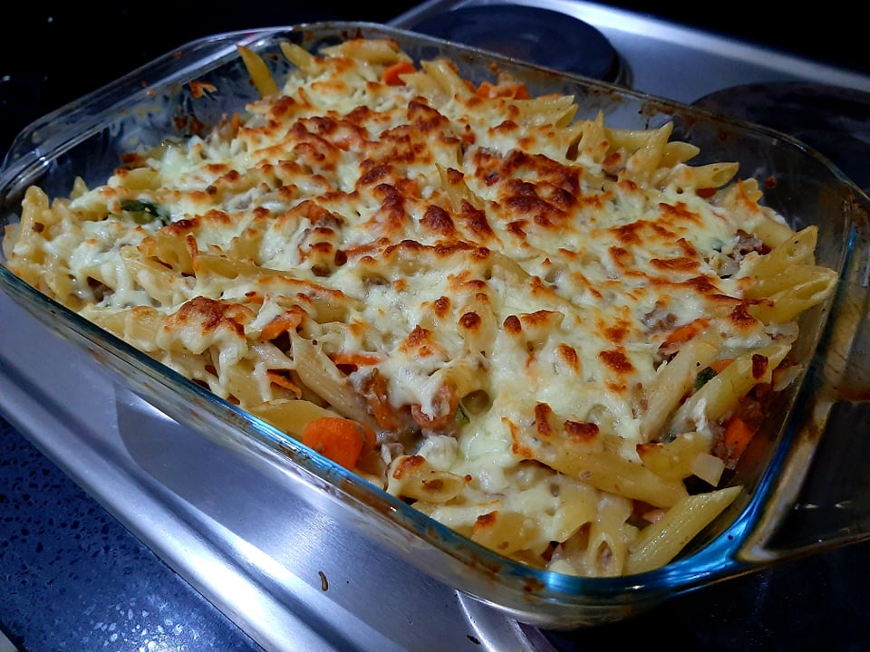

Chicken & Penne

About this recipe
This recipe is great for meal prep on sunday afternoon
when you want to be free during weeknights
and not think about what you're gonna have to cook that night.
Top with lots of cheese and be sure to turn on the grill in your oven
for the final minutes to let the cheese take a beautiful golden brown colour
Ingredients
- Chicken breast
- Juice of 1 lime
- Salt
- Pepper
- 250g of Penne style pasta
- 1 big onion
- Garlic
- to taste
- we recommend 4 cloves for this amount of chicken
- Peeled canned tomatoes
- Tomato paste
- Béchamel sauce
- English mustard
- Mozarella cheese
Steps
- Season the chicken with the lime juice, salt and pepper.
Begin to cook the pasta, aiming for a minute less
than its packaging instructions recomment.
- Sauté the onion with the garlic until fragrant, adding in the chicken.
- Let the chicken cook for a few minutes. After it starts to brown, add a spoonful of
tomato paste, letting it toast for a second before mixing it all together.
- Let cook just until the chicken is cooked through, and transfer into a baking dish.
- Add the béchamel and the mustard and mix thoroughly.
Pop it in the oven at 200ºC sprinkled with mozzarella cheese and let brown.